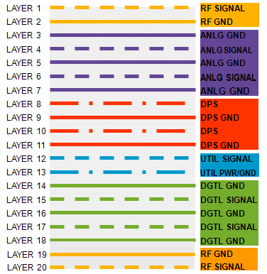

Different types of signal-ground on the DUT board
There are several different signal types on a DUT board. Each type has a different electrical behavior and therefore needs different handling.
- Digital and utility signals
- These signals tend to generate fairly large level electrical noise from fast switching digital circuitry and from their large signal swings between "1" and "0" levels.
- Digital circuits tolerate some relatively large noise levels because of the threshold margin in their internal digital comparator circuits.
- There is non-zero inductance in the return path: V error = L * dI/dt .
- Analog and RF signals
- High frequency RF noise radiates to and from other circuits relatively easily.
- Injected noise causes error in measured value and degrades measurement accuracy.
- Analog and RF signals are very sensitive to added noise, but they are "clean", meaning they Do not add unwanted noise to nearby other signals.
- You can minimize unwanted signal aggression by providing low inductance current return paths. This can be achieved by using ground features adjacent to signal traces.
- DPS signals
- These are similar to either digital or analog type signals - depending on the DUT signal they are supplying the power to.
- Therefore, use separate DPS supplies for different signal types. For example, dedicate DPS1
to digital signals, DPS2 to analog signals, and DPS3 to RF signals.Note Placing power layers and their grounding layers near the top layer allows to use shorter and larger (more) vias, and thus easier fulfilling low impedance return path requirements. This applies to high power, low(er) current and / or higher switching speed applications.
Example DUT board layer structure
A well-balanced board layer structure vertically separates the different functional signal types. Below is a typical example for a relatively simple x-layer DUT board:

RF solutions typically have a lot of components, some of them are really large and bulky. To maximize the available component area, RF components are often placed on both sides of the DUT board. This requires an RF signal-ground pair of layers at either side of the board. In-between these two RF layer pairs reside the digital layers, analog layers, DPS layers, and utility layers.
Functional changes
- Introduced in SmarTest 7.2.0